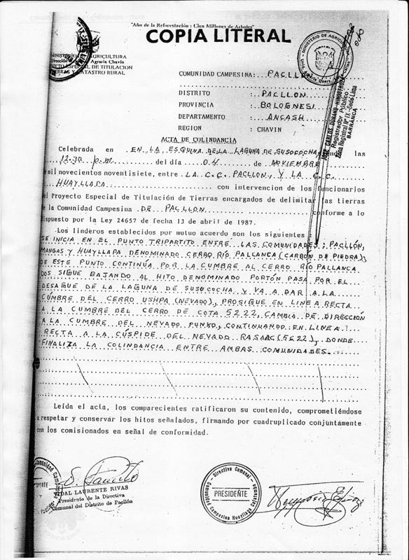

Shared Social License:
mining and conservation in the Peruvian Andes
Timothy B. Norris - tnorris@miami.edu
CLAG 2024 - Viejo Puerto Rico - May 22-26
CLAG 2024 - Viejo Puerto Rico - May 22-26
follow along at: http://tibbben.github.io/clag2024/
McPhee (1971) Encounters with the Archdruid.
Rose (1994) Property and Persuasion.
Chapin (2004). A Challenge to Conservationists. World Watch.
unknown (~2000 BC). The Epic of Gilgamesh.
image: Wahl Tarabieh - https://waeltarabieh.blogspot.com
Shared Social License
Norris, T. B. (2016). Shared Social License:
Mining and Conservation in the Peruvian Andes.
Antipode. doi:10.1111/anti.12300
Mining and Conservation in the Peruvian Andes.
Antipode. doi:10.1111/anti.12300
Extraction / Conservation
“. . . it is precisely the complex alliances of actors around conservation and resource extraction that make the fields of power in which coercion and violence are located so intractable. Indeed one of the most pressing tasks is to understand the contours of what is coercively undertaken in the name of conservation and to determine both the complex alliances (and fissures) and the forms of power and hegemony associated with each”
Watts, M (2000) Contested Communities, Malignant Markets, and Gilded Governance: Justice, Resource Extraction and Conservation in the Tropics. In Zerner, C (ed) Plants, People, and Justice: The politics on nature conservation. New York: Columbia University Press.
Extraction / Conservation
"In environmental policy, it is helpful to differentiate between conservation and allocation. In political reality, actions in these two spheres are closely related. In economic analysis, it is useful to separate them."
Ciriacy-Wantrup, SV (1971) The economics of environmental policy. Land Economics 47: 36-45
Commodification, n (/kəmɒdɪfɪ'keɪʃən/)
|
Marx and Engels (1967 [1867]) Capital; a Critique of Political Economy.
Polanyi (1944) The great transformation.
Castree (2003). Commodifying What Nature? Progress in Human Geography.
Harvey (1982) The Limits to Capital.
Rose (1994). Property and Persuasion.
Polanyi (1944) The great transformation.
Castree (2003). Commodifying What Nature? Progress in Human Geography.
Harvey (1982) The Limits to Capital.
Rose (1994). Property and Persuasion.
"It is this understanding of private property—as a right of access to an income stream which can be improved through the labor of persuasion—which can articulate the economies of mining and conservation."
Commodification of the Underground: Mineral Extraction
|
Bridge (2004). Mapping the BonanzaThe Professional Geographer.
Tsing (2005). Friction.
Harvey (2006). The Limits to Capital.
Locke (1823 [1689]). Two Treatises of Government.
Harvey (2006). The Limits to Capital.
Locke (1823 [1689]). Two Treatises of Government.
"... the ore that I have digged [sic] in any place, where I have right in common with others, become my property without the assignation or consent of anybody." (Locke)
Commodification of the Surface: Neoliberal Conservation
|
Brockington and Duffy (2008). Nature Unbound.
Li (2007). The WIll to Improve.
Sachs (1992). The Development Dictionary.
Igoe and Brockington (2007). Noeliberal Conservation. Conservation and Society.
Li (2007). The WIll to Improve.
Sachs (1992). The Development Dictionary.
Igoe and Brockington (2007). Noeliberal Conservation. Conservation and Society.
"This vision of conservation is similar to how Sachs (1992) understood 'development' as a process anchored within the market, state, and science. The market-state-science construct becomes ... conservation."
Questions ...


